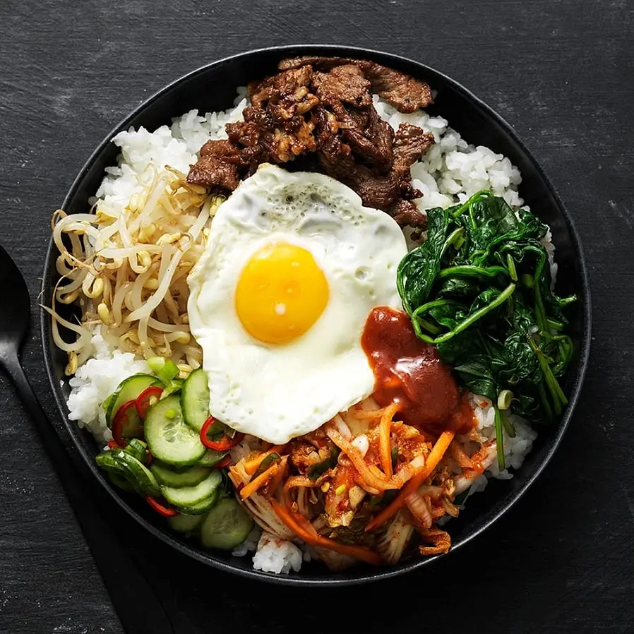

Bimbimbap 130 kr
Bibimbap är en koreansk maträtt. Den görs på koreanskt ris tillsammans med stark chilisås, som blandas med olika sorters grönsaker, stekt ägg och kimchi. Ordet betyder blandat mål.
Koodora är ett asiatisk restaurangbransch som erbjuder hemleverans av restaurangmat. Koodora är även verksamt i flera länder som Sverige, Norge, Danmark, Österrike, Ungern, Slovakien och Tjeckien. Den mat du behöver är minuter bort från din dörr.
Bibimbap är en koreansk maträtt. Den görs på koreanskt ris tillsammans med stark chilisås, som blandas med olika sorters grönsaker, stekt ägg och kimchi. Ordet betyder blandat mål.
Kung paos kyckling eller Gong bao är en världskänd kinesisk maträtt huvudsakligen bestående av wokad tärnad kyckling med chili.
Bulgogi eller pulgogi är en koreansk maträtt gjord på nötkött som först marineras och sedan grillas över glödande träkol. Japans motsvarighet kallas yakiniku och är starkt förknippat med Korea eftersom rätten introducerades och utvecklades till yakiniku av koreanska immigranter.

Mapo Doufu är en traditionell och mycket populär kinesisk rätt som stammar ur sichuanska köket. Rätten lagas, som så många andra kinesiska rätter, i wokpanna och serveras över en skål ångat ris.
Koreansk friterad kyckling, vanligtvis kallad chikin i Korea, hänvisar till en mängd olika friterade kycklingrätter skapade i Sydkorea, inklusive den grundläggande huraideu-kycklingen och kryddig yangnyeom-kyckling. I Sydkorea konsumeras friterad kyckling som en måltid, en aptitretare, anju eller som mellanmål efter måltiden.
Char siu är en kantonesisk stil av grillat fläsk. Det har sitt ursprung i Guangdong och äts med ris, som används som ingrediens för nudelrätter eller i röror, och som fyllning för chasiu baau eller ananasbullar.